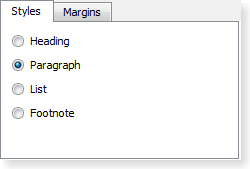
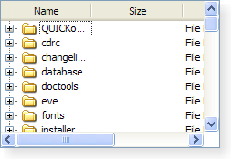

Cross-platform application development with QML and JavaScript
Objective
Present Qt (with QML and JavaScript) as a good solution to develop cross-platform (desktop, embedded, and mobile) applications.

Qt Functionality
User Interfaces in Qt
- Qt Widgets
- Qt Webkit / Qt WebEngine
- Qt Quick
Qt Widgets
Traditional way to develop GUIs on the Desktop in C++
Qt Widgets
- Native look and feel
- Standard industry widgets
- Model/View programming
- Hard to get custom look and feel
- No hardware accelerated graphics
- No animations/graphical effects
Qt WebKit & Qt WebEngine
Integrate web content |
 |
Qt WebKit & Qt WebEngine
- Leverage existing web-dev skills
- Single look and feel across all platforms
- Package existing web content
- C++, JavaScript and QML Qt APIs
Qt Quick
- Developed with mobile platforms in mind
- Optimised for touch screens
- Custom look and feel
- Fluid animated UIs
- Graphical effects
- Hardware acceleration
Qt Quick
- Rapid UI development
- QML and JavaScript (optionally C++)
- Declarative user interfaces with property bindings
Qt Quick
QML Language
“QML is a declarative language designed to describe the user interface of a program: both what it looks like, and how it behaves. In QML, a user interface is specified as a tree of objects with properties.”
Qt Quick
Basic QML syntax
import QtQuick 1.1
Rectangle {
width: 200
height: 200
color: "lightgrey"
Image {
source: "pics/logo.png"
anchors.centerIn: parent
}
}
Qt Quick
Expressions and property bindings
Item {
width: 100 * 3
height: 50 + 22
Rectangle {
width: parent.width - 50
height: 100
color: "yellow"
}
}
Qt Quick
Signal Handlers
Item {
width: 100; height: 100
MouseArea {
anchors.fill: parent
onClicked: {
console.log("mouse button clicked")
}
}
}
Examples
Same game
Tweet Search

StocQt
Qt Quick Controls

Lines of code
Thank you.
Questions?
antony.guinard@gmail.comBonus slides
Supported platforms
- Windows
- Linux/X11
- OS X
- Embedded Android
- Embedded Linux
- Windows Embedded (Compact and Standard)
- Real-Time Operating Systems, such as QNX, VxWorks and INTEGRITY
- Android
- iOS
- WinRT (including Windows Phone)
Qt WebKit & Qt WebEngine
Qt WebKit & Qt WebEngine
Qt WebKit & Qt WebEngine
“PhantomJS is a headless WebKit scriptable with a JavaScript API. It has fast and native support for various web standards: DOM handling, CSS selector, JSON, Canvas, and SVG.”